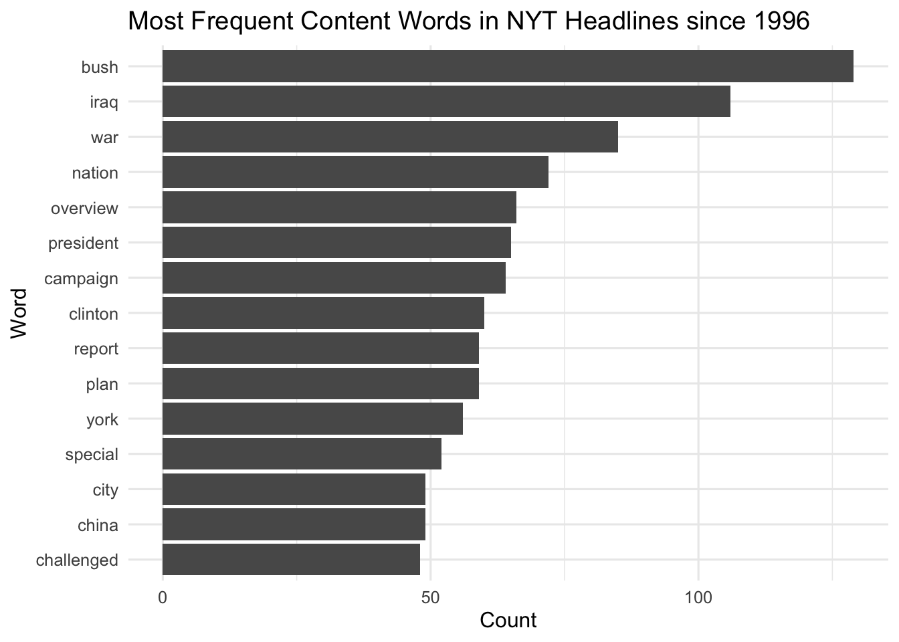
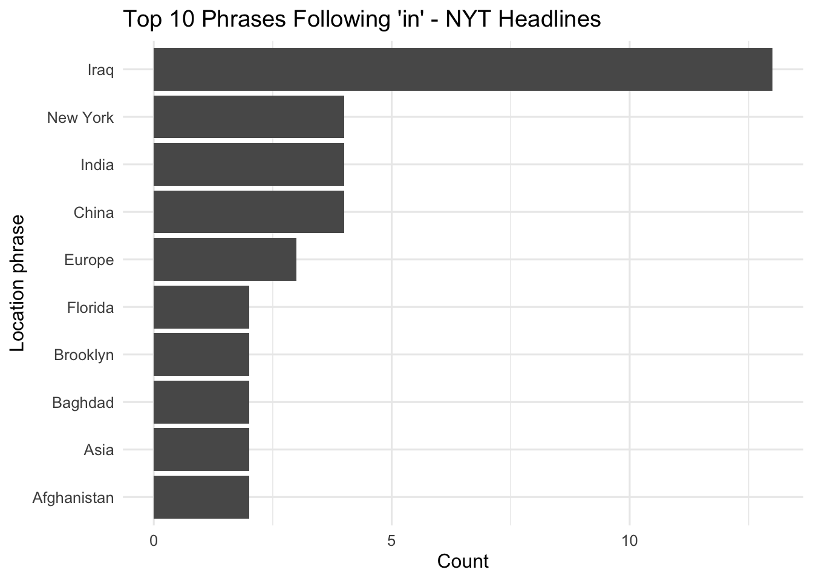

titles_tokens <- nyt |>
transmute(
Title_clean = Title |>
str_to_lower() |>
str_replace_all("[^a-z\\s]", " ") |>
str_replace_all("\\s+", " ") |>
str_trim()
) |>
unnest_tokens(word, Title_clean, token = "words") |>
anti_join(stop_words, by = "word") |>
filter(str_detect(word, "^[a-z]+$"), nchar(word) >= 3)
top_words <- titles_tokens |>
count(word, sort = TRUE) |>
slice_head(n = 15)Analysing New York Times Headlines
On this page I analyze a dataset of headlines from all New York Times articles dating back to 1996. My goal is to explore patterns in three areas:
- which content words show up most frequently,
- which geographic references appear most often, and
- how often numbers—especially calendar years—are used in the paper’s headlines.
This dataset comes from the NYTimes sample data included in the RTextTools package, which provides a structured and labeled collection of headline text suitable for text-mining exercises.
Frequest Word Usage
The following code cleans the headline text by lowercasing, removing punctuation, and stripping extra spaces. It then tokenizes the titles into individual words, removes stop words (like “the,” “and,” etc.), filters out very short strings, and counts the most frequent content words. The final object, top_words, keeps only the 15 most common meaningful words.
# Plot — Top content words
ggplot(top_words, aes(x = reorder(word, n), y = n)) +
geom_col() +
coord_flip() +
labs(
title = "Most Frequent
VWords in NYT Headlines since 1996",
x = "Word",
y = "Count"
) +
theme_minimal(base_size = 12)
This bar chart shows the most common words in found in the headline column of the data set. It’s an interesting way to find many of the most common topics covered by the New York Times over the past three decades. Notably, the top three words stand distinctively above the rest in usage: Bush, Iraq, and War. this makes sense as all three of these words point to the same general event of President Bush’s decision to invade Iraq following 9/11. This makes sense as it was a large global event that took place near the beginning of this data’s period of observation. These findings make an interesting claim about how extensively the war in Iraq penetrated the American news cycle.
Frequently Mentioned Places
in this section I find the locations that are most frequestly refrenced by searcing for words that follow the preposition “in…”
The code extracts any capitalized phrase following the word “in,” cleans the extracted place strings, counts how often each appears, and returns the top ten most frequent location phrases.
locs <- nyt |>
transmute(
Title,
loc = str_extract_all(
Title,
"(?<=\\bin\\s)([A-Z][A-Za-z\\-]+(?:\\s[A-Z][A-Za-z\\-]+)*)"
)
) |>
unnest(loc) |>
mutate(loc = loc |>
str_replace_all("\\s+", " ") |>
str_trim()) |>
count(loc, sort = TRUE) |>
slice_head(n = 10)# Plot 2 — Top phrases following "in "
ggplot(locs, aes(x = reorder(loc, n), y = n)) +
geom_col() +
coord_flip() +
labs(
title = "Top 10 Phrases Following 'in' - NYT Headlines",
x = "Location phrase",
y = "Count"
) +
theme_minimal(base_size = 12)
The clear standout here is Iraq, which again reinforces how central the region was to U.S. news coverage in the early 2000s. Interestingly, the list is dominated by Middle Eastern and European locations, while continents such as Africa and South America do not appear in the top ten at all, revealing something about the NYT’s geographic priorities and what kinds of crises receive sustained attention. Among U.S. locations, only New York and Florida make the list, pointing to the newspaper’s home base and what I would guess is the frequency of election-related stories tied to Florida. These counts measure the frequency of locations framed as settings (“in ___”), not total mentions, making the pattern a bit more precise in identifying where events are depicted as happening.
It is worth noting that many of these names have much higher tallies when counting total uses. The specific criteria of words following “in” is meant to isolate the places where stories are taking place opposed to total mentions, however, this does introduce a limitation to the findings of this table.
Headlines Containing Numbers & Years
Numbers appear in headlines for many reasons: summaries of statistics, references to specific quantities, and, importantly, mentions of historical and future years. This section measures how common numeric content is and which years are referenced most often.
The following code checks whether each headline contains any number and separately extracts four-digit years beginning with 19xx or 20xx. It then calculates the share of headlines containing numbers.
title_nums <- nyt |>
transmute(
Title,
has_number = str_detect(Title, "\\b\\d{1,3}(?:,\\d{3})*(?:\\.\\d+)?\\b"),
years_list = str_extract_all(Title, "\\b(19|20)\\d{2}\\b")
)
prop_table <- tibble(
metric = c("Headlines containing any number"),
value = c(mean(title_nums$has_number))
) |>
mutate(share = scales::percent(value)) |>
select(metric, share)# Table — Share of headlines with numbers / percentages
kable(
prop_table,
col.names = c("Metric", "Share of headlines"),
caption = "% of NYT headlines with numeric content"
)| Metric | Share of headlines |
|---|---|
| Headlines containing any number | 11% |
Roughly 11% of headlines include at least one number—meaning that while numerical information is not dominant in headline writing, it still appears with some regularity
Most Mentioned Years
This code unwraps all extracted years into a long table, counts how often each appears, and displays the ten most frequently referenced years in NYT headlines.
# Table — Most mentioned years
years_top <- title_nums |>
select(years_list) |>
unnest(years_list, keep_empty = FALSE) |>
count(year = years_list, sort = TRUE) |>
slice_head(n = 10)
kable(
years_top,
col.names = c("Year", "Count"),
caption = "Top 10 years referenced in headlines"
)| Year | Count |
|---|---|
| 2000 | 37 |
| 1998 | 6 |
| 2004 | 3 |
| 1964 | 2 |
| 1996 | 2 |
| 2003 | 2 |
| 1937 | 1 |
| 1940 | 1 |
| 1970 | 1 |
| 1972 | 1 |
A striking number of the years listed fall before the dataset begins in 1996. This suggests that when journalists reference a year, they tend to be anchoring a story in a more distant historical context—invoking events from decades prior rather than referencing the near-present. The year 2000 appears far more often than any other, likely due to Y2K coverage, millennium retrospectives, and political shifts unfolding around that time. Most of the other years are mentioned only once or twice, showing that specific years tend to be invoked sparingly except during historically charged moments.
Data Citation: R Core Team. (2020). NYTimes: a sample dataset containing labeled headlines from The New York Times. RTextTools. https://rdrr.io/cran/RTextTools/man/NYTimes.html